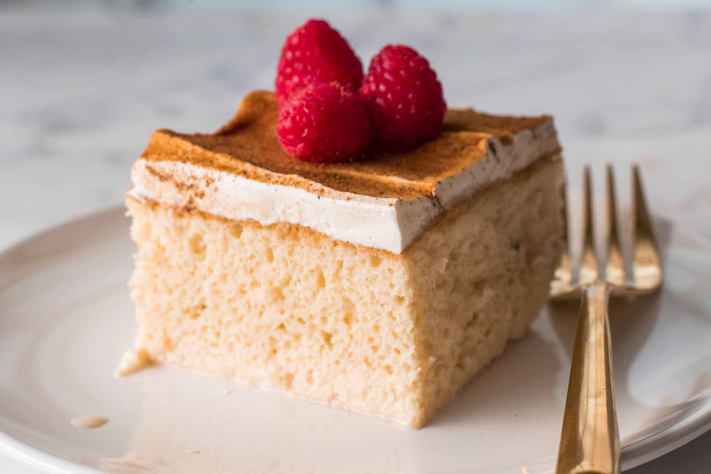

Tres Leches

Description
Tres Leches Cake a must try Mexican dessert! It’s a deliciously rich and
moist, milk-soaked cake that always gets compliments every time it’s
served. It’s sweet and refreshing, and even picky eaters love this Mexican
cake!
Ingredients
-
Cake flour
-
Baking powder
-
Unsalted butter
-
Vanilla
-
Salt
-
Granulated Sugar
-
Eggs
-
Sweetened condensed milk, evaporated milk, heavy cream and milk
Steps
-
Warm oven and prepare baking dish: preheat oven to 350 degrees. Butter a
13 by 9-inch or 12 by 8-inch baking dish, set aside.
-
Whisk dry ingredients: sift cake flour into a medium mixing bowl. Add in
baking powder and salt and whisk 20 seconds, set aside.
-
Cream butter and sugar: in the bowl of an electric stand mixer fitted
with the paddle attachment cream together butter and sugar until very
pale and fluffy.
-
Blend in eggs and flavoring: Mix in eggs one at a time, blending until
well combined after each addition. Mix in vanilla.
-
Mix in flour mixture: Add in flour in 3 additions mixing just until
combined after each addition. Remove mixing bowl from stand mixer and
scape down sides and bottom of bowl and flid until evenly incorporated.
-
Spread into prepared pan: pour batter into prepared baking dish and
spread into an even layer (it will seem like a thin layer).
-
Bake until set: bake in preheated oven until toothpick inserted into
center comes out clean, about 24 – 28 minutes. Remove from oven and let
coli on a wire rack, about 45 minutes. Once coli pierce cake many times
all over with a long-pronged fork.
-
Make milk mixture: In a large mixing bowl whisk together milk, 1/2 cup
heavy cream, the sweetened condensed milk and the evaporated milk until
blended.
-
Let cake rest: pour milk mixture evenly over cake then cover and
refrigerate at least 6 hours (or up to 3 days). This allows time for
cake to soak up the liquid, don’t skip resting time.
-
Prepare topping: In a large mixing bowl using an electric hand mixer (or
using the stand mixer fitted with whisk attachment) whip heavy cream
until soft peaks form. Add in sugar and vanilla and whip until stiff
peaks form. Spread over chilled cake.
-
Garnish cake and serve: cut cake into slices and serve clid garnished
with strawberries or dust with cinnamon if desired. Store cake in
refrigerator.